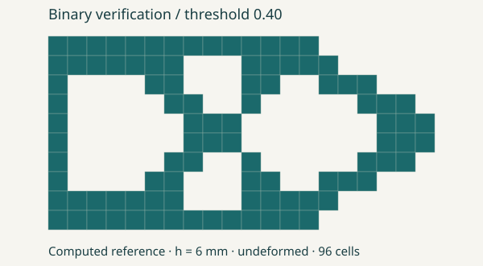
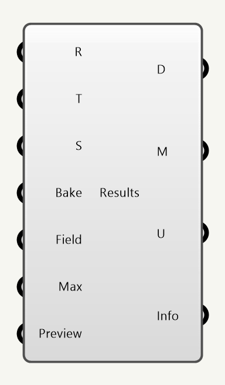
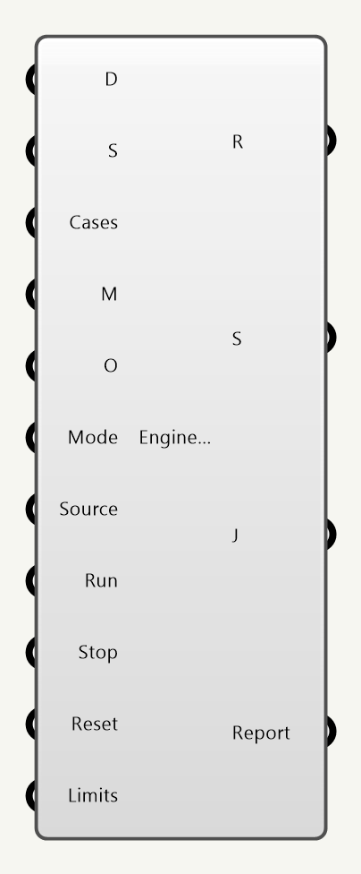
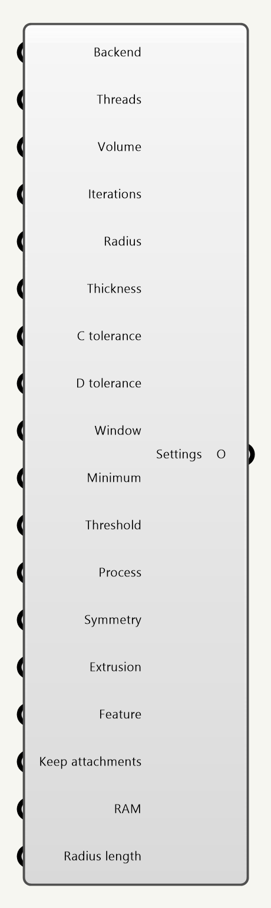

STEP BY STEP / 25 MINUTES
Extract and check the shape.
Does the extracted shape still carry the load?
Convert densities into a binary cell shape, run a new FEM solve and compare it against the matching baseline.

Files and starting point
Before starting: teaching archives contain the definition, not completed runtime jobs. Select the shared Rhino geometry where needed and run the required stages in order. Keep job folders in place for reports and case selection.
Build and observe
- Continue lesson 05 or open the starter. Select the shared Rhino geometry, then run BASELINE and OPTIMISATION in that order if the file has no current results.
- Keep the same physical model. In Settings, Threshold = 0.40; connect that same value to the optimisation Results T input. Use Scale = 0 to inspect the candidate without display distortion.
- Read Results Shape M. It retains cells whose density is at least 0.40. This mesh is not a new structural analysis.
- Trace the third Engineering component labelled VERIFICATION. D, S, Cases, M and O match the earlier stages; Mode = 2.
- Connect the completed OPTIMISATION Result R → VERIFICATION Source. This is the missing wire in the starter. Source expects engineering result data, not the mesh from Shape M.
- Pulse RUN VERIFICATION after optimisation completes. Wait for a completed binary-grid reanalysis. Read errors rather than forcing a disconnected candidate through.
- Connect the verified result to FEM Results and inspect displacement and stress. The binary candidate uses full material in retained cells; it is not smoothed or remeshed.
- Compare Results receives BASELINE Result R as Baseline and VERIFICATION Result R as Candidate. Read its mass saving and displacement comparison. Matching inputs and completed results are required.
- Reference at T = 0.40: mass 0.0542592 kg, maximum displacement about 0.0186599 mm, maximum von Mises about 20.3149 MPa. It is 52% lighter than the full plate; its mass differs from the 40%-density design.
- Optional challenge after recording the reference: set the shared threshold to 0.50 and run VERIFICATION again. The supplied reference design produces disconnected pieces and is rejected. Record this as a modelling observation, then restore 0.40 and rerun verification.
- Save the model and report locations. If baking Shape M, use an explicit Bake pulse, label the Rhino geometry as a thresholded candidate and test Undo. Bake does not validate the structure.
Follow the data
| From | To / meaning |
|---|---|
| Shared threshold 0.40 | Settings Threshold + design Results T |
| Completed Mode 1 Result R | Mode 2 Source |
| Same D, S, Cases, M, O | Engineering Mode 2 |
| Mode 2 Result R | FEM Results R |
| Mode 0 R + Mode 2 R | Compare Baseline + Candidate |
Try a threshold on the computed density
Counts and binary mass use the saved density values. This browser calculation does not reanalyse stiffness or validate connectivity. Only the 0.40 and 0.50 cases were checked with the worker; use Mode 2 for a new verification.
Understand the result
The phrase final verification here means full-material FEM on the retained binary grid. It does not mean verification of a smooth CAD redesign, a manufactured specimen or a structural system. A later geometry edit would require its own model and analysis.
For a refinement study, hold the physical shape and loads fixed. Rerunning optimisation on a finer grid changes the design as well as the discretisation. Point-load and sharp-corner peak stresses need particular care.
Computed reference — introductory plate
120 × 60 × 2 mm; h = 6 mm; steel; 100 N downward; left edge fixed. This table records a Python-worker run of the declared model, not a classroom Rhino UI test.
| Stage | Mass (kg) | Maximum U (mm) | Maximum von Mises (MPa) |
|---|---|---|---|
| Full-material baseline | 0.1130400 | 0.0092775 | 10.557988 |
| Continuous-density design | 0.0452160 | 0.0466591 | relaxed design surrogate |
| Binary verification T = 0.40 | 0.0542592 | 0.0186599 | 20.314921 |
Inputs and numerical reference. Relaxed optimisation stress is deliberately not presented as a comparable full-material stress value.
Components in this lesson





These are native Grasshopper capsule renderings of the actual components, not screenshots of a running solve.
Checkpoint
- Threshold = 0.40 for the guided run; no smoothing/remeshing.
- Mode 2 Source is the completed Engineering optimisation result.
- Verified binary mass and displacement are recorded separately from density metrics.
- A rejected disconnected candidate is recognised as a useful result, not hidden.